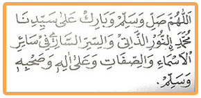
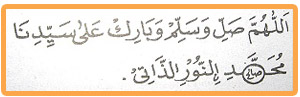

Allaahumma shalli wasallim 'ala sayyidinaa Muhammadinin nuuridz dzaatii wassirrissaarii fii saairil asmaai wash shifaati wa'alaa aalihi washah bihii wasallim
Artinya :
Ya Allah berikanlah rahmat keselamatan dan berkah kepada junjungan kita Nabi Muhammad SAW merupakan cahaya Dzat (Allah) dan merupakan raasia yang mengalir pada seluruh nama dan sifat dan berikanlah pula salam sejahtera, barokah atas keluarganya dan para sahabatnya.
Fadhilah dan manfat sholawat Nuridzzati :
Lafadz sholawat Nuridzzati disusun oleh Imam Syadzali, kata beliau satu sholawat nilainya sama dengan 100.000 sholawat. Gunanya ialah untuk menghilangkan segala macam kesusahan, untuk membuka pintu rizqi dan memudahkannya. Dibaca paling sedikit 3 x setelah shalat fardlu
Manfaat yang lain untuk pagar / membentengi badan , caranya dengan puasa tiga hari , mulai hari Selasa, Rabu dan Kamis, sholawat Nuridzati dibaca sebanyak-banyaknya selama puasa. Setelah selesai puasa sholawat dibaca 41 x sehari semalam secara istiqomah. Dapat pula untuk menangkal gangguan anak kecil terhadap jin/syetan agar tidak rewel, selamat dari penyakit yang membahayakan.
Cara membuatnya , sebelum menulis sholawat nuridzati shalat hajat 2 rakaat , waktu menulis dalam keadaan suci dan menghadap kiblat , usahakan menulisnya pakai kertas putih dengan tinta minyak misik ja'faron/ minyak mawar. setelah ditulis kertas dilipat berbentuk segi empat, dibungkus kain putih lalu dikalungkan pada anak yang dimaksud, Insya Allah selamat.
Cara menulisnya

....................................... dan seterusnya.
Pada lafadz Muhammad mim yang kedua dibesarkan hingga cukup diisi dengan nama anak yang ditangkal, misalnya nama "Shalih"ditulis seperti contoh di atas.
Wallahu A’lam